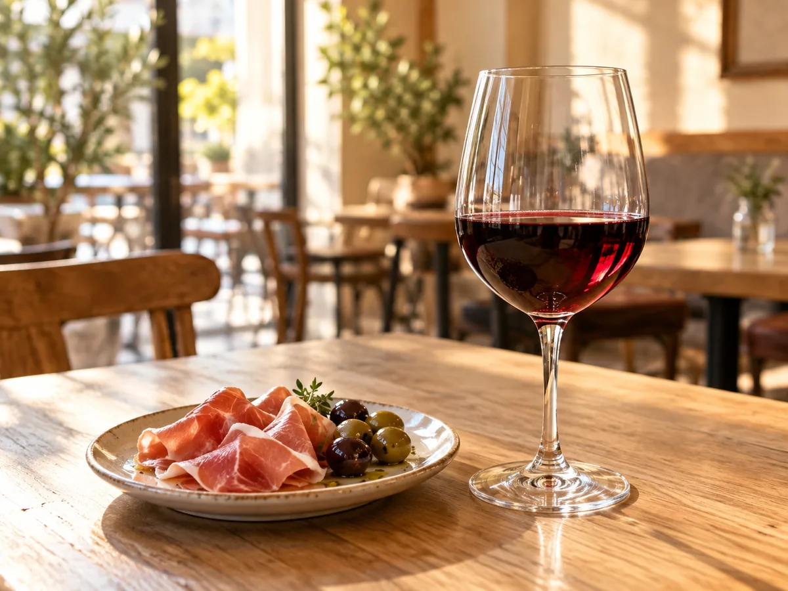

CONCEPT
コーヒーの店に、
ワインが加わった
仲小路コーヒー&ワインは、秋田市中通の仲小路商店街にあります。 はじまりは2014年8月、スペシャリティコーヒーの専門店としてでした。 2016年6月、店名を改め、ワインを加えた今の形になりました。
そのときに掲げられたのが、こういうコンセプトです。
ワインバーは格式高く感じられがちなので、気軽に利用できる店づくりを心がけたい。 秋田経済新聞（2016年7月7日）に掲載された、オーナーの言葉より
公式サイトには、こうあります。「地域の皆様に癒しの空間で一杯の高品質コーヒーを提供することで、 幸せを感じられるコーヒー店を目指しております」。
いいものを、構えずに。コーヒーもワインも、同じ考え方で出されています。
